Many problems have a generator–verifier gap: it’s often far easier to verify that a solution is correct than to come up with one. Sudoku is a classic example. It’s simple to check the solution (just count the numbers in each row, column, and box), but finding that solution can take a long time. Many ambitious Claude projects have relied on this gap: formalizing proofs in mathematics or migrating large, well-tested codebases are tasks Claude can take on as long as it has a reliable way to verify its work.
But as Claude has become more capable, it’s begun to take on projects in live systems, where generating the work is easier than verifying it. In these systems, users often rely on edge cases and quirks that fall outside the test suite, and it’s hard to write a definition of “correct” that covers everything. Without a reliable way to check Claude’s work, the migration of a live system is hard to trust—however quickly Claude can generate the code for it.
We ran into this problem when we migrated our Messages API from Python to Rust. This API is the primary way that customers—as well as our own apps, like Claude Code and Cowork—reach Claude. From early 2024 to fall 2026, API traffic grew roughly 1,800 times. Rust would allow us to use far less CPU per request. Claude wrote a first version of the API’s core request path in about a week. But building trust in the migration required us to find a way to verify that our Rust API was at parity with our production API. This proved hard for several reasons, including that the Python API continued changing throughout the migration, so parity was a moving target; Claude can reply nondeterministically to the same request, so a difference between two outputs didn’t necessarily mean a bug; and we couldn't read customer requests, so we weren't able to easily see where the two versions diverged.
In this post, we share how we turned the production Messages API itself into a verifier—and how that helped us test the new Rust version on production traffic, find where it differed, and automatically dispatch agents to fix those differences. This allowed us to ship an API on Rust that uses about 70% less CPU per request and cuts median time to first token by about 20% without ever taking the service offline or freezing feature development.
Why migrate?
We built the Messages API in 2023 and wrote it in Python, which was widely used internally for much of our research code. At first, it was simple. The Messages API passed requests to the model and sent back what the model wrote. (One engineer at the time called it “basically a request forwarder.”) But as the Messages API became more capable and deeply integrated with our codebases, it also developed shared dependencies with Python libraries that were owned by our research and inference teams, which made it hard to move. If we ever wanted to move to another language, it would mean building logging, metrics, and tools all over again.
This calculus gradually began to change. By late 2025, every Messages API request had to be validated, converted into the prompt, tokenized, and screened by our safety classifiers. As each reply arrived, the stream of tokens had to be sorted into text, thinking, and tool calls, and Python added overhead to every one of those steps each time it created an object, freed memory, or handed its work to the next task. Traffic eventually grew far beyond what the initial Python service was built for (Figure 1), and we quickly needed to find a way to make the service much more efficient.
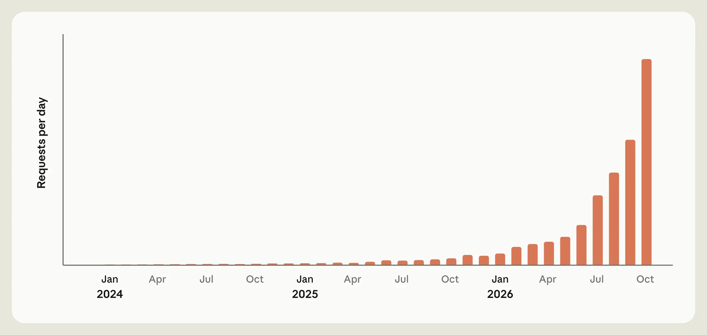
Incremental or all at once?
Full rewrites of large production systems are often approached cautiously, for at least two reasons. First, there is no guarantee that test suites cover 100% of production code behavior, and rewriting it is risky. Second, the sheer effort required often makes such work intractable. (In 2024, after one of our engineers suggested migrating to Go or Rust, another temporarily settled the question: “We are not rewriting the API in go or rust!”)
The standard advice if you’re looking for performance gains is thus to rewrite only the parts that are slowing the system down, so that’s where we started. In Rust, we rewrote the code that parses a model’s output and called it from Python. This reduced the API’s CPU usage by about 8% to 10%. However, incremental solutions often incur added complexity, and it’s important to make sure that incremental improvements justify those costs. In our case, the gains didn’t justify the added complexity. Each token now crossed between Python and Rust three times (Figure 2), creating new sources of overhead.
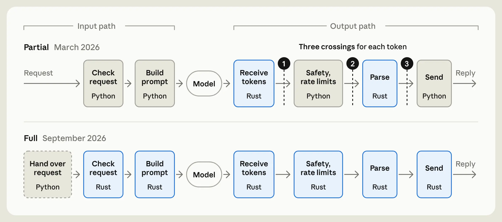
As Claude became increasingly capable, we began to question whether the usual reasons to avoid a full migration still held. The effort required to undertake the project was dropping fast: by May 2026, Claude was writing more than 80% of the code Anthropic merged. We wondered if Claude could now help us write code that would empirically capture every behavior and fix in the production system. But the question became: how could we verify that the behavior of our migration was correct? Verification, not generation, had become the bottleneck.
How we verified the migration
General approaches
To verify the migration, we first needed to define what “correct” meant. You can do this in a few ways (Figure 3). If you’re lucky, you can simply write a rule. A theorem in mathematics is a precise statement, and a proof assistant (like Lean) can check each step of a proof against a fixed set of rules. Other times—and more frequently in software engineering—you define “correct” with a set of examples, like tests. For instance, when Bun moved from Zig to Rust, its test suite was written in TypeScript, so the same tests could judge both versions. In our case, neither approach was sufficient, so we used the existing system as an oracle to test parity during the migration. In this case, our existing system (the Messages API) kept changing. We were releasing new models and shipping new features regularly, which made the definition of “correct” a moving target.
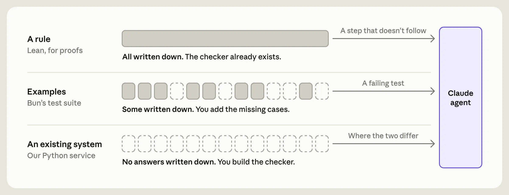
Tests
Tests were the easiest place for us to start, since we already had an existing set of about 700 integration tests. However, two problems limited our ability to trust them to verify the correctness of a migration as high stakes as this (Figure 4).
The tests were coupled to the Python implementation. An integration test sends a request, then checks the reply and what was sent to other services. Our tests ran the Python API inside the test’s process and mocked services, like billing and rate limiting, in Python’s memory. The tests had to change along with the code, and Claude helped with both. Now, a “pass” could mean that the code was right, or that the test had been changed in a way that let wrong code through. We saw this happen: when we audited the ported tests, we found more than 100 weakened assertions.
The tests were incomplete. The Messages API has dozens of features, and there are far too many configurations to test them exhaustively. Just 20 binary options make over a million combinations—that translates to 12 days of tests at a second each, for one model, before we even vary the prompts inside them. In practice, engineers test a subset that tries to approximate production, but that process inevitably misses cases. Some projects, like Bun, have an independent suite that’s extensive enough to judge a rewrite. Many production services don’t; what counts as correct depends as much on how they behave as on what’s in their tests or documentation.
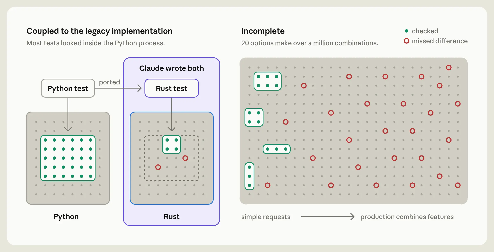
Detecting parity with production
Production data is sometimes “the only true test” that new code behaves like the old code. Running requests through old and new code and comparing the results is often called shadowing. To understand what we needed to compare, it helps to walk through what happens to a single request on the Messages API (Figure 5). The API validates each request, converts it into a prompt a model can read (the prompt for inference), tokenizes it, and runs it through safety classifiers. A model then writes a reply, one token at a time. On the output side, the API sorts those tokens into text, thinking, and tool calls, streams them to the customer, and counts usage for limits and billing.
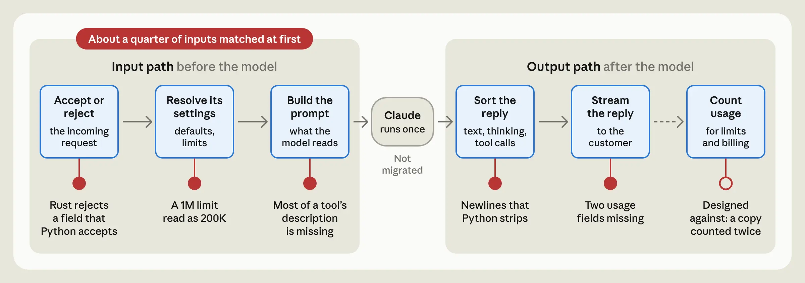
The migration covered both the input and output paths. Some differences were obvious, such as when the Rust API rejected a request that Python had accepted. But many were subtle. For instance, if the Rust API left out part of a prompt, the request would still succeed and the model would still answer, though sometimes with minor differences.
Our Rust API passed about 98% of its tests in April, yet only about a quarter of inputs matched on production traffic (Figure 6). The gap came partly from cases in production traffic that our tests didn’t cover. For example, when Python writes JSON tool calls, it escapes certain characters (e.g., an emoji) by replacing them with text codes. Rust wrote those characters as is, so the two prompts differed by a few bytes. Production also weighted bugs differently. In a test suite, each case counts once, but in live traffic, a bug will show up in each request where it’s triggered, which means a single common bug can cause many mismatches.
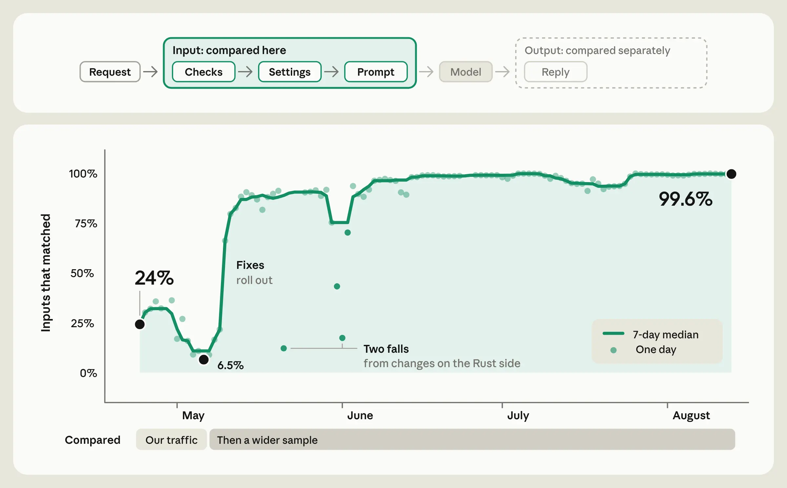
Common tools for shadowing often assume that a request can safely run twice, or that a service is deterministic. These assumptions didn’t apply in our case. We had to ensure that a request only counted once toward a customer’s limits and bill. In addition, Claude is nondeterministic, meaning that replies can differ for the same input (Figure 7). To address this, we ran the model once and replayed the model output to Rust.
With both versions working from the same model output, we still had to compare every stage before and after the model call, and the results had to match exactly. In many systems, bad input causes an error somewhere down the stack. But since Claude accepts almost any prompt, even a small deviation can change its reply without triggering an error. We compared each step before and after the model call, so that we could pin down any deviation that might change what a customer received.
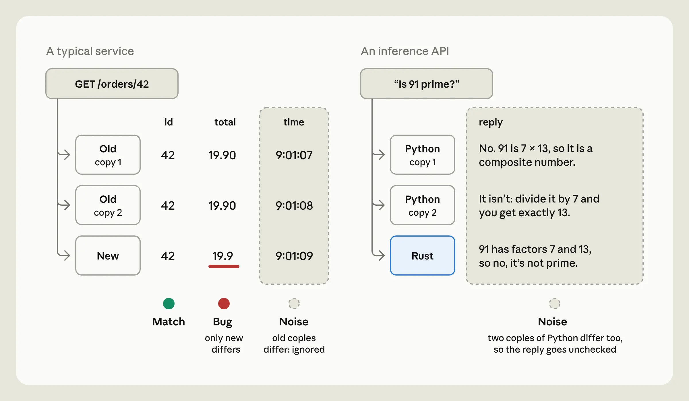
It was important to us to do this in a way that protected user privacy. To do that we had to work without reading user requests or Claude’s replies to them, which means we couldn’t easily see where the Rust and Python versions of the API differed. So instead of looking at text, we recorded the shape of each difference, such as where it happened in the service and how big it was. We did this using a few different approaches:
- Checkpointing. Both API versions handle a request using the same steps: accept or reject it, resolve its settings, build the prompt. Every step produces some result, such as an error or the pieces of the prompt, that we could compare step by step, and within the prompt, piece by piece. The first place they differed indicated roughly where the migration code differed from production code (Figure 8).
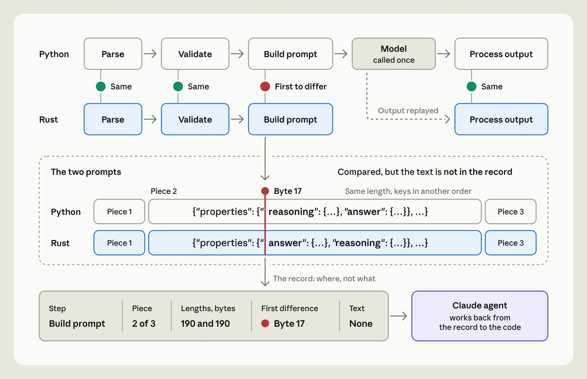
- Fingerprint. Once we knew roughly where each diff resided, we still needed a way to distinguish one bug from another. We recorded where each difference began in the prompt, as well as the length difference between the two versions. Combined with the step and piece of the prompt isolated in checkpointing, we found that bugs presented with a specific fingerprint. That is, one bug tends to leave the same fingerprint on every request it affects (Figure 9). We could then group errors by fingerprint, which helped us triage the fixes.
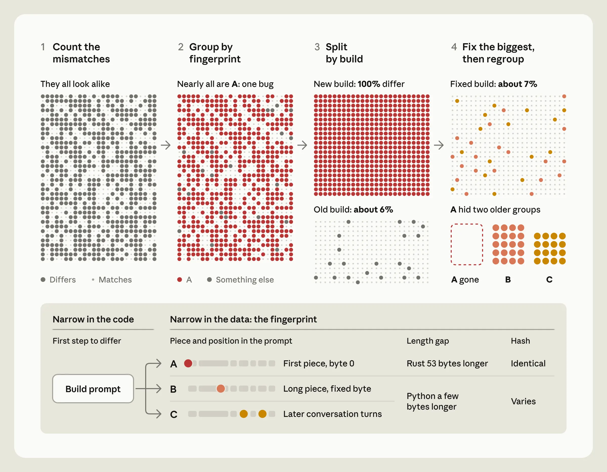
The result was a shadowing system that produced a small record of each difference between our Rust and Python APIs. Here is an example, with made-up values:
step: build prompt ← where in the code
piece: 2 ← where in the prompt
first diff: byte 17 ← fingerprint
python: 190 bytes ← fingerprint
rust: 190 bytes ← fingerprintWe could then pass this record to an agent to fix it.
Verification loops
Each request that differed left a record in our logs. A single bug could produce hundreds of thousands of nearly identical diff records. Rather than send each to an agent, we ran a script every 10 to 30 minutes that grouped them by which fields differed, then alerted a coordinating Claude agent only when it saw a new kind of record. This coordinator assigned a worker agent to own each new kind of record. It also created a new thread in a shared Slack channel where human engineers could follow along and steer it when necessary.
To tackle the many bugs, we set up a series of verification loops. A fast inner loop gave agents a sandbox in which they could test ideas and propose fixes. A slower outer loop then validated fixes in production. In addition, a memory loop recorded any mistakes along the way, saving them so that agents could learn over time (Figure 10).
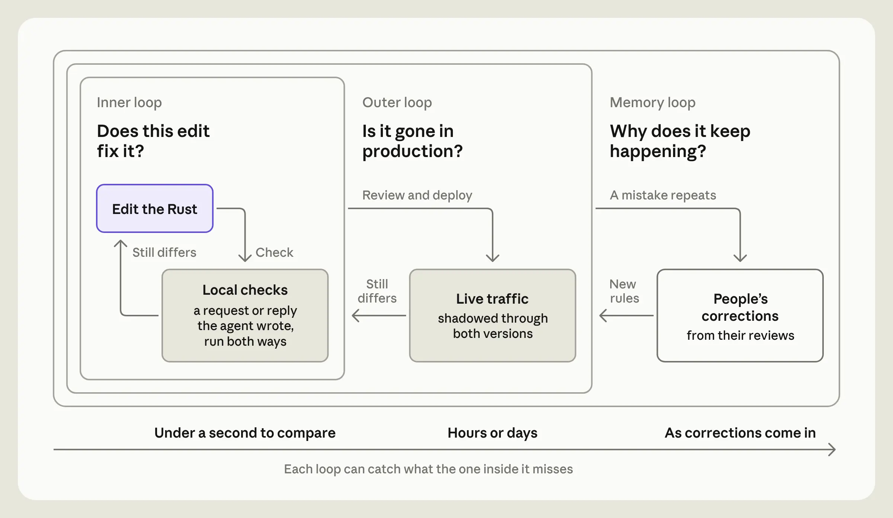
Inner loop
When we first started testing this in April, we gave each agent a record that showed where the Rust and Python versions differed. Agents would guess the root cause from the code and open a pull request. Once the fix was reviewed and merged, they deployed it to staging, a preproduction copy of the Rust API where we ran the same shadow comparison on test traffic. The agents checked whether the difference was eliminated. Since every hypothesis needed a review and a deployment, feedback was taking hours or days.
We needed agents to get a signal from verification much sooner, so we moved them into their own workspace. We redesigned the inner loop so that agents could have a place to test ideas quickly and fail safely. Each agent ran in a cloud sandbox with both codebases and fast, local checks for what happens before and after the model call. The input check took a request, built the prompt that each version would send to the model, and showed what differed. Because this check never actually called the model, comparing the versions took under a second. We later added an output check, which ran both versions against a fake model. The output check passed a scripted reply, such as a tool call, through each version and compared the results.
The main limitation was that agents could only see the fingerprint, not the request behind each record. So an agent would hypothesize what had caused the difference, then write its own request or model reply to try to reproduce the difference. Since each agent was writing these itself, it could read both results in full. If the results matched, its guess was wrong and the agent tried again. If they differed the same way the record described, the agent edited the Rust until the two versions matched, then added a test that failed on the old code and passed on the new (Figure 11).
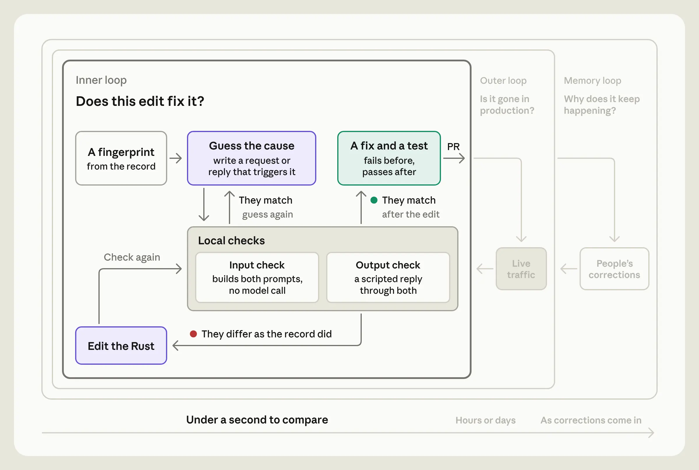
The seam between the inner and outer loops was a good checkpoint for human review. Inside the sandbox, a wrong guess cost an agent only a few seconds and had no impact on users. Agents could iterate on their own. We allowed a fix to cross into the outer loop only after it had undergone PR review; this allowed engineers to focus their attention on proposed fixes (rather than on guesses) and on the questions the verifiers couldn’t answer, such as whether a difference between the Rust and Python APIs was the result of a bug or a deliberate change.
Agents posted their fixes and evidence to their Slack threads for engineers to review. In mid-May, one of the largest remaining differences between the Rust and Python APIs came from web search. The production API retrieved the web search tool’s description from an internal service. The Rust API didn’t call this service yet, so the tool description was missing from the prompts. An agent proposed a shortcut to copy the text into files that would be readable by Rust. The prompts then matched, and the fix passed the local verifier. But an engineer turned it down because it didn’t solve the problem: Rust would still need to call the service before launch, at which point the workaround would be thrown out (Figure 12).
But the verifier rewarded matching outputs, and the agent found the cheapest way to produce them. A verifier can tell an agent whether the outputs matched, but not whether the fix is good enough to ship. That’s why human review was an important gate.
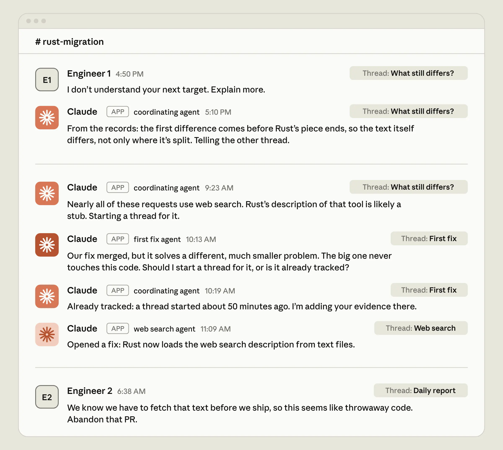
Outer loop
In the inner loop, agents debugged differences and proposed fixes. At the seam between the inner loop and the outer loop, engineers reviewed the proposed fixes, gave feedback, and approved them to deploy. The outer loop then compared Rust API deployments with and without each fix.
To make that comparison fair, we logged facts about each request we compared, but not its text, including which model and API features it used—for example, prompt caching, tools, or extended thinking. These details let agents compare requests of the same kind (Figure 13) and ask how often the bug’s fingerprint appeared on builds with and without the fix. This way, agents could monitor the new builds for the bug.
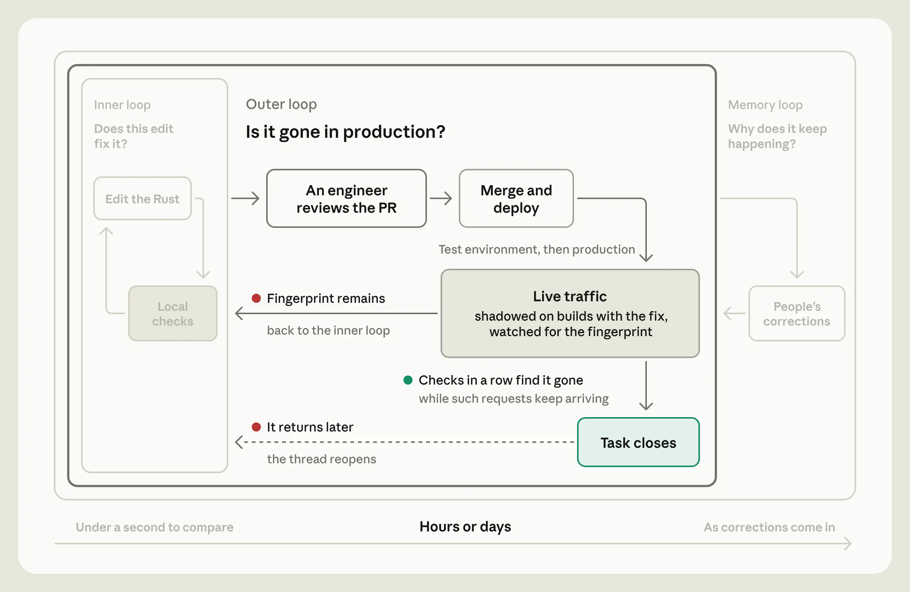
We designed the outer loop to catch problems that the inner loop missed. The inner loop simulated production quickly but imperfectly: agents could test a hypothesis in seconds, but only on requests they had written, and with a local verifier that wasn’t always configured exactly like production.
This means that sometimes a fix passed in the sandbox and production still showed the difference. The agent assigned to the bug would either see the difference in the new build’s records, or be alerted by the coordinating agent. It then went back to the inner loop and used that evidence to form a new hypothesis.
Memory loop
The inner and outer loops fixed one difference at a time. The memory loop improved how agents made those fixes. We didn’t want engineers to have to make the same correction twice, so we recorded what came out of reviews and agents’ own work and applied it to every agent that followed.
For example, when an engineer turned down the web search shortcut (Figure 12), the agent saved a note to memory explaining the decision, the reason for it, and the correct fix, which was to have Rust call the service that supplies tool descriptions.
Building that call took our team weeks, and in the meantime the bug kept producing records. Some had new fingerprints, because the missing text fell at other positions in the prompt or belonged to another tool that used the same service. Agents checked the memory note, recognized the known bug, and linked those records to it, instead of writing another workaround (Figure 14).
Other lessons became general rules for porting and writing Rust. After one agent guessed at Python’s behavior, an engineer made it a rule to port exactly what Python did. An agent then compared the existing code with that rule and found seven more places where the port had relied on a guess.
In June, an agent also went through about 60 of the team’s review comments, grouped the recurring problems and proposed rules, which an engineer edited and approved for CLAUDE.md (Figure 14).
The memory loop also encoded some lessons in permanent checks. This included new tests that failed when Rust drifted from Python, lints that banned patterns reviewers kept flagging, and later a merge check that required anyone changing the Python code to make a matching change in Rust or request an exemption.
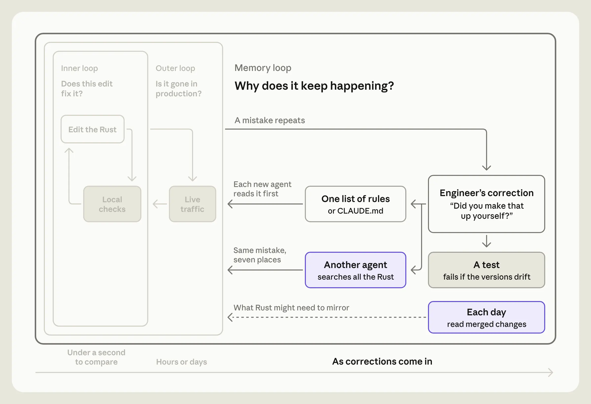
Looking ahead
It’s increasingly feasible to migrate production systems with Claude, either for better performance or security, without taking an API offline or slowing feature development. Now that the hard part is no longer writing new code, we need to build sufficient confidence that the new system behaves like the old one.
The usual approach to migration is a bit like rebuilding the Ship of Theseus, in which the old ship was replaced plank by plank. Generally it’s been possible to replace planks while the ship still sails, but changing too many planks at once requires coming into dock. To fully stretch the metaphor, Claude now makes it possible to build an identically functioning ship alongside the first—even as the first keeps sailing and having its planks replaced. Agents kept the new ship in step as the old one changed, and we kept checking that the two behaved the same. Once we trusted that they did, we moved the passengers over a few at a time. The new ship sails faster and more efficiently than the old one.
Lessons learned
Verification is the new bottleneck. Previously, large software projects like migrations were hard to justify because they took too much effort and carried too much risk. But if writing code is no longer the bottleneck, the main constraint becomes how quickly you can verify results. In general, ambition can be increased as long as there’s a way for Claude to verify correctness.
Verification is how you earn confidence. In math, we use a proof assistant to verify that each step of a proof Claude wrote is valid. For software, tests or formal verification can help us gain similar confidence. But when these checks aren’t enough, a production system itself can also be a verifier.
Carefully design the verification signal. A verifier provides a signal that Claude can act on. We can calibrate this signal to show Claude where things went wrong. Where a proof assistant points to the failing step or a test names the failing case, a production system often offers no such signal by default. Much of our effort for this project went to building such a signal. In this case, checkpoints located each difference in the code and fingerprints helped tell one bug from another.
Build loops that let Claude autonomously act on the signal. Our inner loop was fast and ran locally in a sandbox. Agents tested hypotheses in seconds using requests they wrote themselves. The outer loop was slower and checked fixes on shadowed production traffic. The outermost loop was just prose, with corrections saved as rules in memory that could be read by every agent later in the process. Together, these loops allowed us to migrate the Messages API to Rust, which uses about 70% less CPU per request and reduces median time to first token by about 20% (Figure 15).
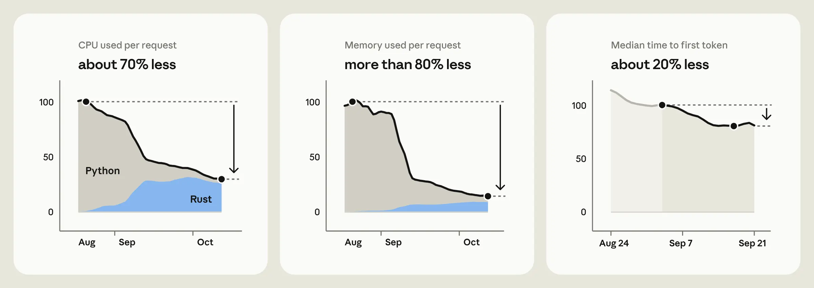
Keep the loops simple, so they scale with Claude’s capability. We tried to put human judgment only into what counted as correct; otherwise we left it up to Claude how to get there. Agents chose which hypotheses to test, how to reproduce each bug, and how to fix it. The verifiers judged the result. Simple loops around strong verifiers allowed us to move productively over time (Figure 16).
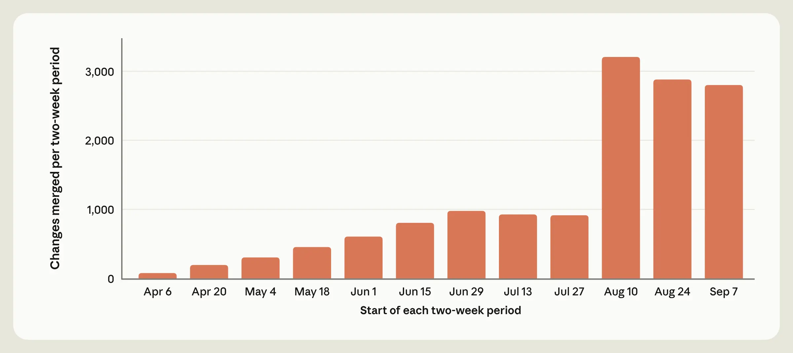
Move toward outer loops. At first, we had our engineers working inside the inner loop, running Claude and chasing differences themselves. Later, they moved to the seam between loops, helping to steer agents and reviewing fixes in Slack. But as the system matured, they increasingly moved to the edge, where they could provide the highest leverage, writing the rules and checks that agents worked within. As Claude grew more intelligent (and as we grew more intelligent at working with it), we evolved from directing Claude to Claude directing itself, relying on humans mainly for important judgment calls.